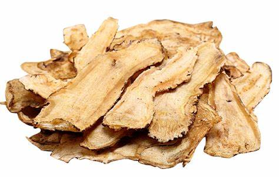

常见中药材样本
查看我们系统支持检测的部分中药材样本及检测示例


中医药大学
药材研究所
制药企业
药材市场
质检机构
我们的平台结合了先进的AI技术与传统中医药知识，为您提供全方位的中药材检测解决方案
基于深度学习的图像识别技术，能够精确分析药材外观特征，辨别真伪优劣。
输入描述性文本即可获取药材识别结果，结构化展示功效与用途。
自动分析视频关键帧并识别药材种类，适用于基地监测与批量筛查。
无需专业知识，轻松获取准确的中药材检测结果，为您的健康保驾护航。
只需通过拍照或上传图片的方式提交您的中药材样本，记得确保图像清晰、完整，这样才能让我们的系统更精准地识别哦。
我们强大的AI系统会迅速对样本进行多角度细致分析，然后结合庞大的数据库进行精准比对识别，不放过任何一个细微特征。
系统会快速生成一份详细的检测信息，其中包括药材名称、品质等级、成分分析等丰富信息，让您一目了然。
支持对中药材品类的自动识别、真伪甄别与品质评级
跳转至智能体进行中药材图像识别
跳转至智能体进行中药材文字描述识别
跳转至智能体进行中药材视频识别
扫描中药材包装二维码，获取溯源信息
查看我们系统支持检测的部分中药材样本及检测示例
依托先进的AI技术和庞大的数据库，我们为您提供精准可靠的中药材检测服务
支持检测药材种类
平均检测准确率(%)
药材样本数量
平均检测耗时
中药智检是致力于将先进的AI技术与传统中医药相结合，为中药材行业提供高效、准确、便捷的检测解决方案。
我们的团队由数据科学与大数据技术、中药学等领域的专家组成，拥有丰富的行业经验和技术积累。我们的使命是通过科技创新，推动中药材行业的规范化和现代化发展，保障中药材质量和安全，促进中医药事业的健康发展。
通过多项专业机构认证，确保检测结果的权威性和可靠性
由行业专家与技术精英组成，提供专业的中药材检测服务
持续创新的技术研发能力，不断提升检测精度和效率
全方位的技术支持与服务，为您解决中药材检测难题